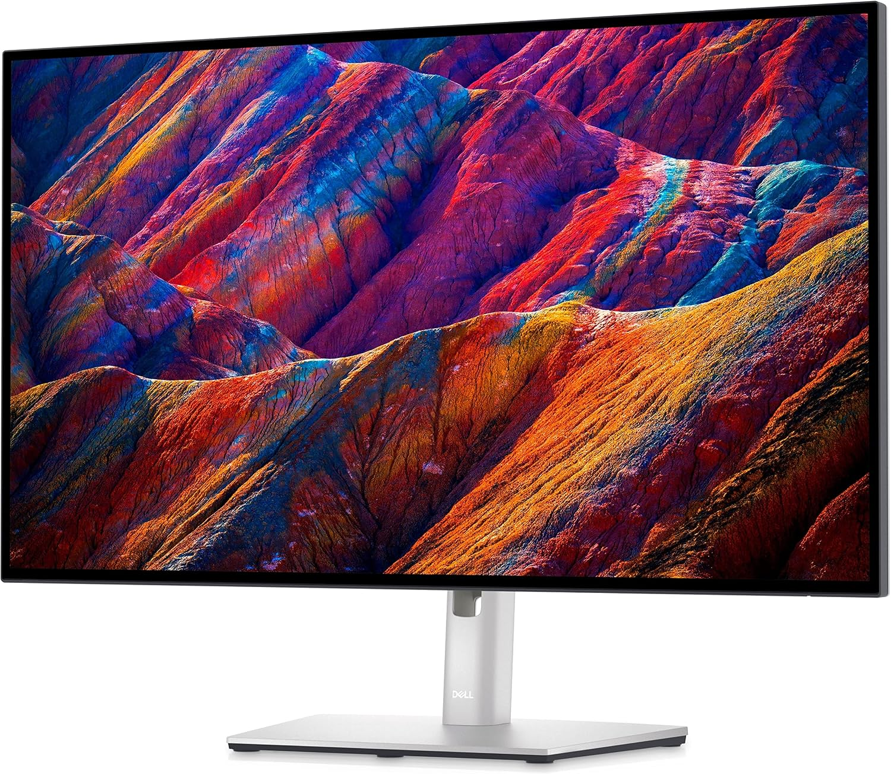
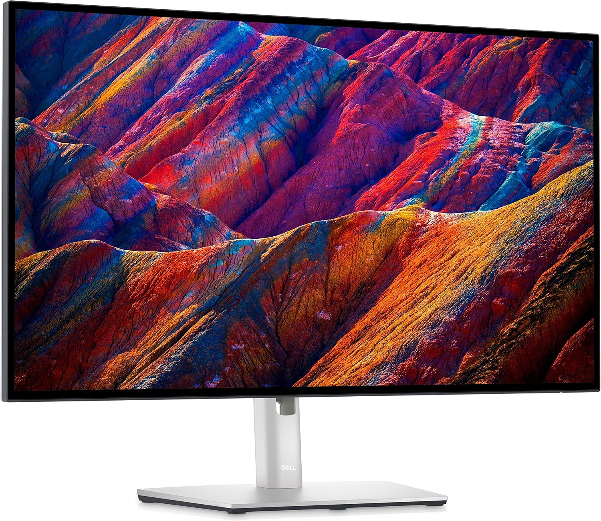
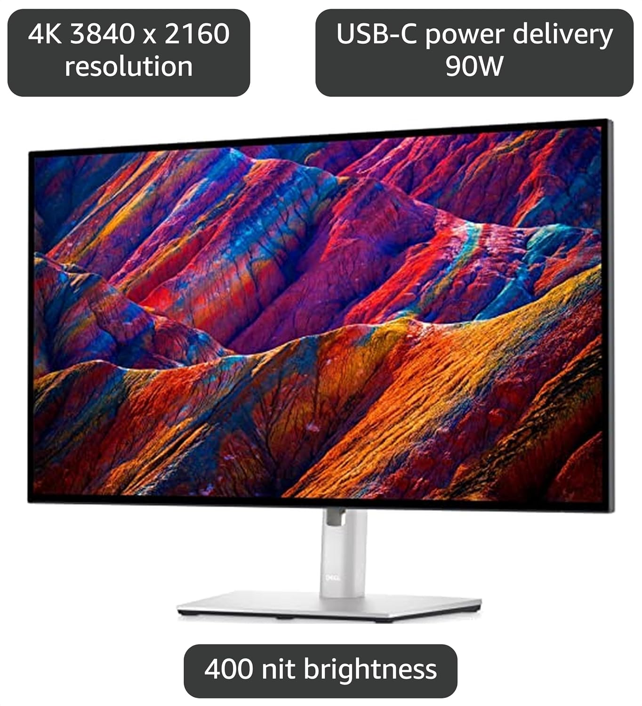

Dell UltraSharp U2723QE
4K 27" IPS Black para edición.
Dell UltraSharp U2723QE
LCD IPS
Dell
U2723QE
Especificaciones técnicas
- Pantalla: 27" IPS Black
- Resolución: 3840 × 2160
- Frecuencia: 60 Hz
- Conectividad: USB-C, DisplayPort, HDMI
- Uso: productividad y edición
Explicación de la tecnología
La tecnología IPS mantiene colores estables y una gran calidad de imagen en ángulos amplios. El panel IPS Black mejora el contraste respecto a IPS estándar, lo que lo hace ideal para trabajo profesional.
Ventajas y desventajas
- Ventajas: excelente color, gran claridad, conectividad USB-C y buen ergonomía.
- Desventajas: precio más alto y no está pensado para usuarios que buscan máxima tasa de refresco.
Objetivo CompTIA Tech+
Compare and contrast display components and attributes.